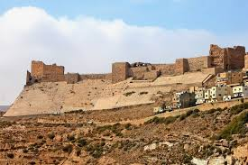
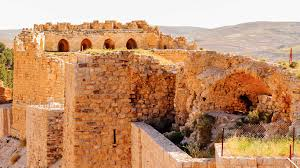
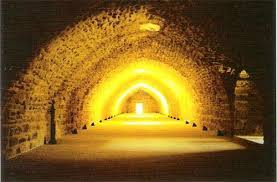
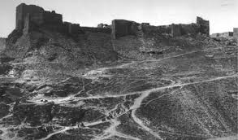

About Karak Castle
Karak Castle, also known as Kerak, is a large Crusader castle located in the city of Karak in Jordan. It is one of the largest and most well-preserved castles in the region.
The castle was built in the 12th century and played a key role during the Crusades. It sits strategically on a hill overlooking the Dead Sea and the surrounding area, providing excellent defense and control.
The architecture of Karak Castle reflects a blend of Crusader and Islamic styles, making it a unique historical site.
Image Gallery
Here are some beautiful views of Karak Castle:
| Image | Description |
|---|---|
|  | The impressive walls and towers of Karak Castle. |
|  | The interior courtyards and stone pathways. |
|  | Karak Castle in the past. |
Media Section
Listen to traditional Jordanian music and watch a video about Karak Castle:
Castle Facts
| Fact | Detail |
|---|---|
| Location | Karak, Jordan |
| Built | 12th Century |
| Style | Crusader and Islamic architecture |
| Size | Over 9000 square meters |
| Historical Importance | Major Crusader fortress and defense site |
About Karak Castle
Karak Castle, also known as Kerak, is a large Crusader castle located in the city of Karak in Jordan. It is one of the largest and most well-preserved castles in the region.
The castle was built in the 12th century and played a key role during the Crusades. It sits strategically on a hill overlooking the Dead Sea and the surrounding area, providing excellent defense and control.
The architecture of Karak Castle reflects a blend of Crusader and Islamic styles, making it a unique historical site.
Important Historical Events:
- 1142 - Construction of Karak Castle began by the Crusaders.
- 1183 - The castle was besieged by Saladin.
- 1263 - Mamluks took control of the castle.
- Ottoman period - The castle was used as a military base.
Castle Features:
- Massive stone walls and towers.
- Underground tunnels and water cisterns.
- Blend of Crusader and Islamic architectural elements.
- Strategic location on a hill.

For more information, visit the Karak Castle Wikipedia page.